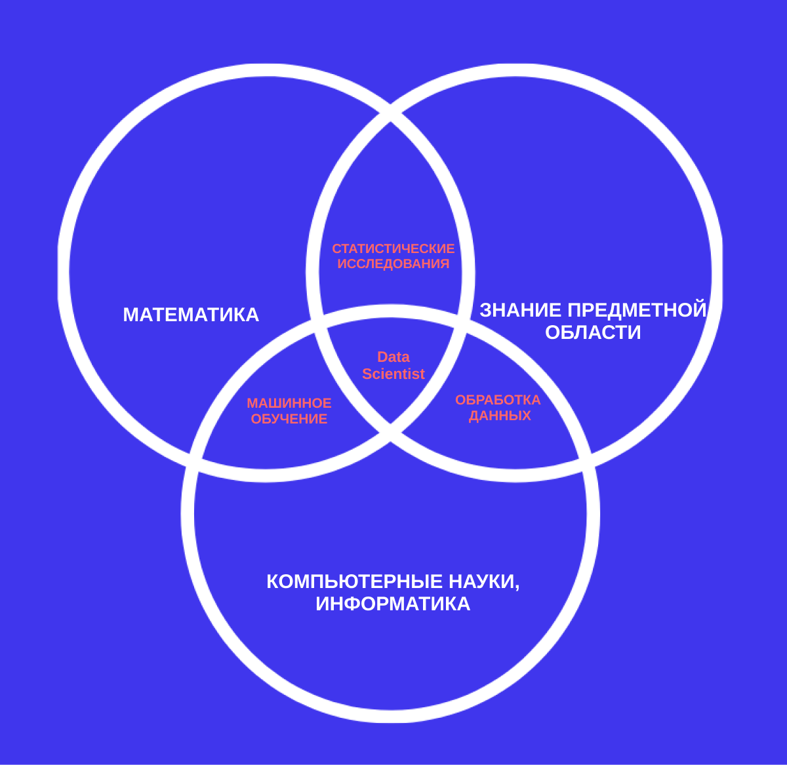

Data Science — наука о данных и их анализе. Сфера охватывает сбор больших массивов структурированных и неструктурированных данных и преобразование их в человекочитаемый формат. Преобразование включает в себя визуализацию, работу со статистикой и аналитическими методами.
Специалисты по Data Science работают везде, где есть большие объемы информации: чаще всего это крупный бизнес, стартапы и научные организации. Поскольку методы работы с данными универсальны, специалистам открыты любые сферы.
Высокая
заработная плата
Востребованность
Стабильное
будущее профессии
Специалист по Data Science обрабатывает массивы данных, находит в них новые связи и закономерности, используя алгоритмы машинного обучения, и строит модели.
Знания и навыки, необходимые специалисту по Data Science
Чего ждёт работодатель?
Базовое знание математической статистики, алгоритмов машинного обучения
Навыки подготовки данных к анализу с помощью библиотек
Cпособность выбрать подходящий алгоритм под задачу и создать модель на его основе
Умение защитить эффективность модели
Способность успешно внедрить её в процесс или продукт
По данным Всемирного экономического форума, работа в Data Science занимает первое место в рейтинге профессий с самым большим спросом на рынке до 2025 года.
Data Science — одна из самых растущих профессий в IT, при этом специалистов компаниям не хватает. За последние три года количество вакансий выросло на 433%. На данный момент более 310 компаний Беларуси в поиске специалиста по Data Science.
Частично рутинная
работа
Частое отсутствие
готового решения
Высокая цена
ошибки
Сейчас хорошее время для входа в профессию — конкуренция пока невысокая. Освоить ее можно и с нулевыми знаниями: главное — интересоваться большими данными и быть готовым много учиться и работать.
01
Понять, что такое Data Science
02
Получить базовые знания математической статистики и навыки программирования
03
Этих знаний будет достаточно, чтобы пройти курсы и углубить свои знания